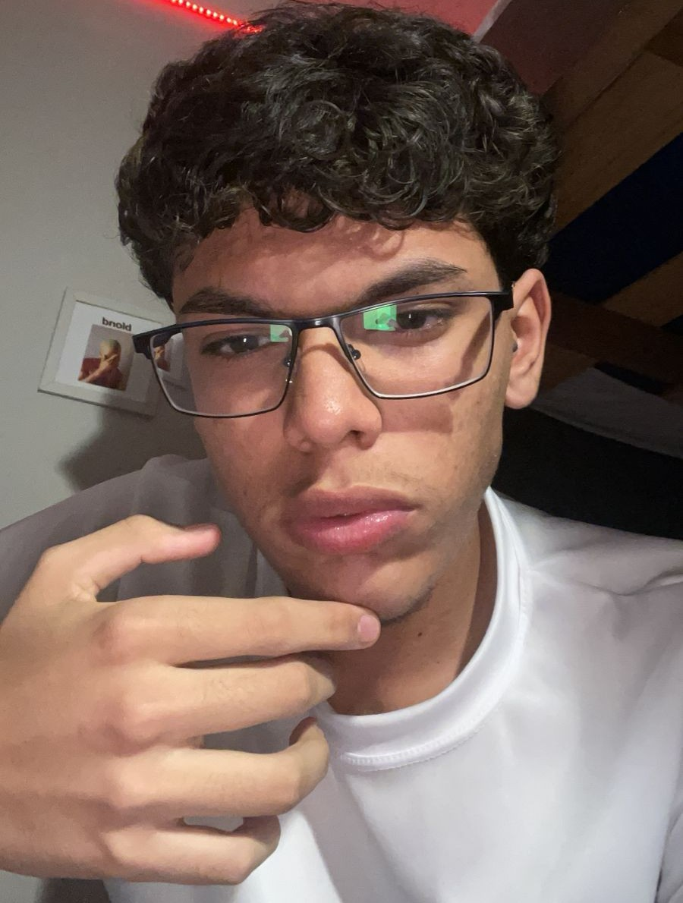

Victor G. De Sousa
Desenvolvedor / Líder do ProjetoResponsável pela liderança técnica, coordenação geral da equipe e desenvolvimento das funcionalidades do projeto.
Somos a equipe responsável pelo desenvolvimento deste site, criado com o objetivo de explorar o universo da música e compartilhar conhecimento sobre seus estilos, sua história e sua importância cultural.
Responsável pela liderança técnica, coordenação geral da equipe e desenvolvimento das funcionalidades do projeto.
Responsável pela concepção visual, experiência do usuário e desenvolvimento das interfaces do site.

Responsável pelo desenvolvimento estrutural das páginas e apoio na elaboração da identidade visual do projeto.